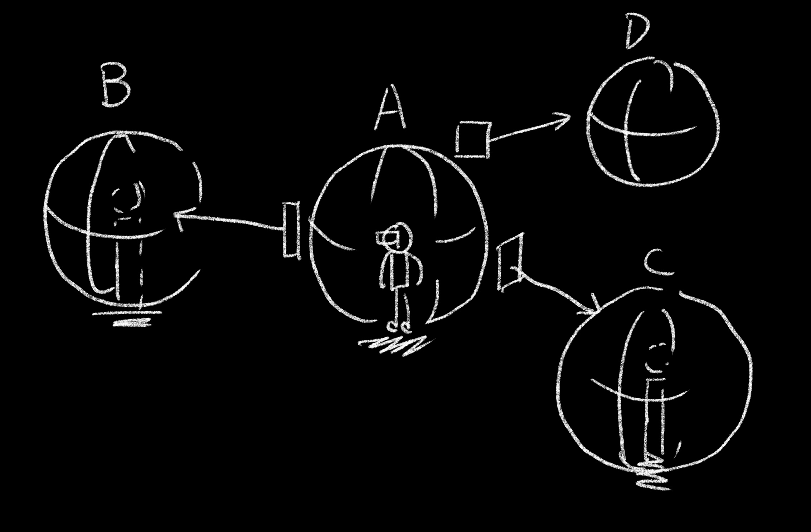
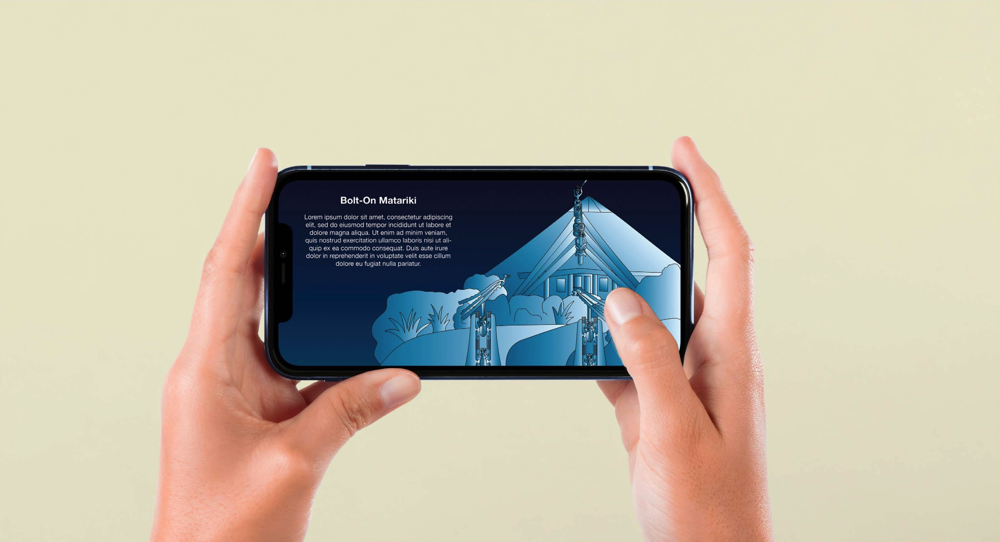
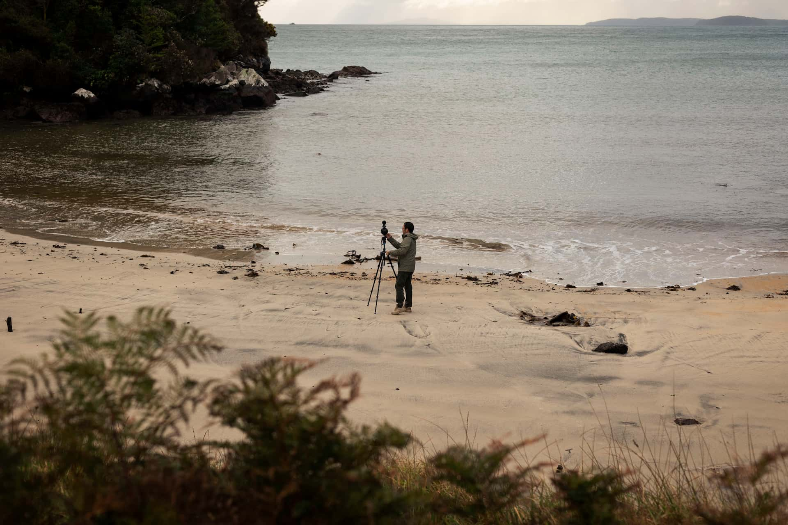
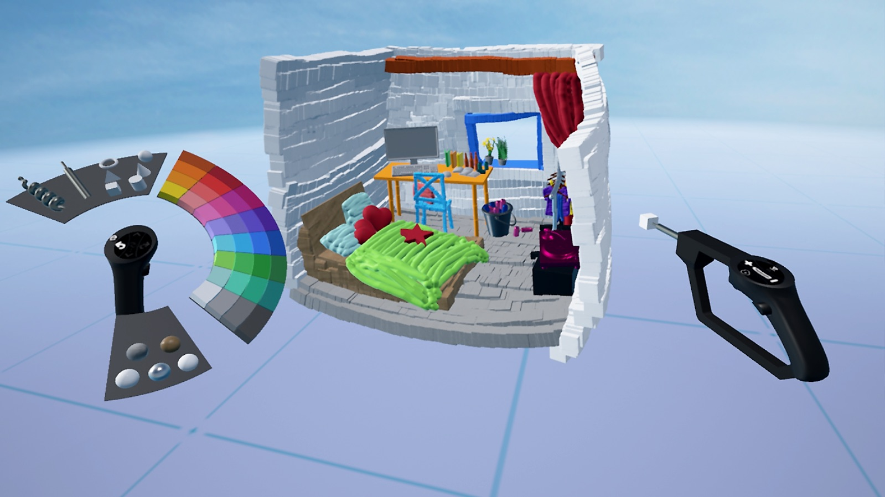

Selected Projects

Immersive Regenerative Tourism
With the tourism industry in Aotearoa New Zealand requiring a transformative approach to foster culturally grounded experiences, I joined an NZD $8.2M MBIE-funded multi-university project as a Postdoctoral Researcher. My objective was to develop on-site AR experiences that enhance tourists' place attachment and collective memory. To achieve this, I explored mobile AR and interactive storytelling tools, working in strict alignment with Māori values such as kaitiakitanga (guardianship). By leading the UX evaluation and co-design methodologies, I ensured the digital solutions were both engaging and culturally relevant. I am currently contributing to this 5-year national research programme, effectively reshaping tourism by bridging cultural preservation with advanced spatial computing to deliver accessible digital heritage experiences.

Tour Master 360
Addressing the growing demand for immersive tourism platforms that provide accessible remote travel experiences, I designed and developed "Tour Master 360," a comprehensive 360-degree interactive storytelling system. I implemented spatial computing principles and rapid prototyping using tools like Unity and WebXR to craft user-centered narratives. By managing the end-to-end design process, I ensured seamless cross-platform usability and high user engagement. Ultimately, I delivered a highly immersive platform that successfully demonstrated the potential of spatial computing in the tourism sector, creating a novel and engaging way for users to explore destinations remotely.

Singapore Airlines A350-900 Virtual Tour
When Singapore Airlines needed an innovative, high-fidelity way to showcase their A350-900 aircraft and global destinations at the prestigious TRENZ 2023 event, I was commissioned to create a commercially viable solution. I designed and developed a Web-based 360° immersive virtual tour seamlessly compatible with both tablets and VR headsets. Focusing on high-quality visual delivery and intuitive navigation, I optimized the 360° media for cross-platform performance to ensure stability during the live event. The virtual tour successfully launched at TRENZ 2023, providing an engaging experience that elevated the brand's presentation, attracted significant attendee interest, and demonstrated strong capabilities in commercial digital product delivery.

Mataliki Hana Nui
Identifying a critical need for engaging and accessible digital tools in cultural heritage preservation, I led the UX design for a mobile-based learning experience targeted at enhancing cultural awareness. I conducted extensive user research and leveraged co-design methods to understand the educational needs of the target audience. Based on these insights, I designed a mobile UI/UX that integrated interactive learning modules with culturally sensitive content to ensure inclusivity. This resulted in a culturally resonant mobile learning prototype that successfully blended educational objectives with engaging digital interactions, paving the way for deeper community engagement with heritage preservation.

Virtual Immersive Wānanga
Traditional educational spaces often lacked accessible digital alternatives that respected bicultural collaborative practices. To bridge this gap, I collaborated with Māori communities to design and develop a virtual learning and workshop space (Wānanga). I applied rigorous co-design methodologies to ensure the virtual environment authentically reflected Māori values and Tikanga, prototyping the space using VR/AR tools with a focus on inclusive design and active learning. I successfully delivered a functional prototype of a virtual Wānanga that provided a culturally safe, immersive space for cross-cultural collaboration, demonstrating a strong commitment to inclusive and bicultural design.

Cinematic VR Storytelling Guidelines
The rapidly emerging field of Cinematic Virtual Reality (CVR) lacked standardized design guidelines for user-centered interactive storytelling. For my PhD research at the HIT Lab NZ, I aimed to establish these effective design guidelines. I designed, developed, and evaluated multiple immersive CVR experiences, conducting extensive qualitative and quantitative user studies. By utilizing the resulting data to drive design improvements and refine spatial UX paradigms, I authored comprehensive, data-driven guidelines for CVR storytelling. This research contributed valuable insights to the academic community and significantly strengthened my expertise in human-centered research and immersive media design.

C4 Coffee Christchurch Order System
C4 Coffee, a prominent local brand in Christchurch, required a modernized digital ordering system to improve customer experience and streamline daily operations. Leading the UI/UX design process, I developed a comprehensive mobile ordering system prototype tailored to their specific business needs. I mapped the customer journey through user research to identify friction points, and then created low and high-fidelity wireframes and interactive mockups using Figma. By iterating rapidly based on usability testing and stakeholder feedback, I delivered a polished, intuitive UI/UX prototype that optimized the ordering workflow and significantly improved the anticipated user experience.

NAPOS App
Store managers in the catering and retail industry frequently struggled with inefficient, complex back-office management and inventory control systems. To resolve this, I designed the NAPOS App, a mobile SaaS application optimizing daily operational workflows. After conducting pre-design interviews to identify high-frequency operations, I designed an intuitive dashboard utilizing a card-based UI and Floating Action Buttons (FAB) for quick inventory status checks and single-click actions. I developed a streamlined, user-friendly mobile platform that significantly reduced the cognitive load for store managers, enabling faster decision-making and highly efficient inventory control.

CastBox - VR Sculpting Tool
Recognizing that existing 2D PC software like ZBrush presented a steep learning curve for beginners interested in 3D modeling, I joined a cross-functional team to design "CastBox," an immersive VR creativity tool. Tasked with making digital sculpting intuitive, I explored spatial UI layouts and ultimately designed a "fan-out" tool palette that mimicked physical oil painting, keeping tools easily accessible on the user's virtual hands. Contributing to the full product lifecycle from ideation to deployment, I helped replace traditional 2D paradigms with immersive 3D interaction models, delivering a highly accessible VR experience that significantly lowered the barrier to entry for 3D content creation.